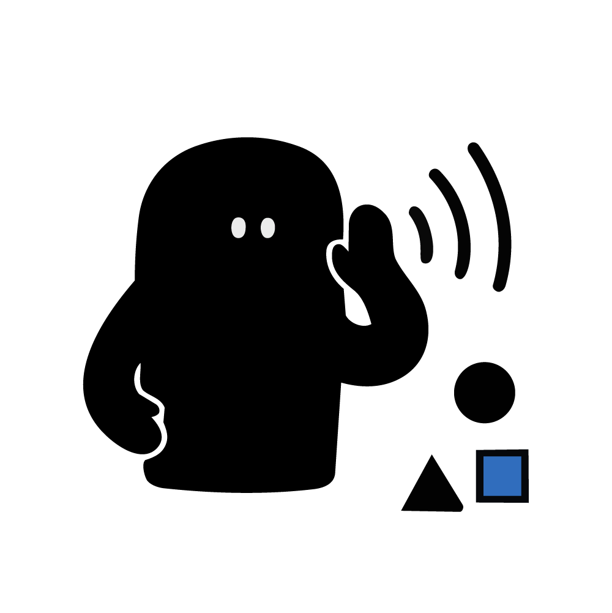

DONES
ESPIRITUALES
Desarrollado por
Revisado por Pastor Gustavo Zepeda
⚡ CONOCE TUS DONES
0% Completado

No me identifico
Así soy yo
RESULTADO OFICIAL
Tus Dones Espirituales
Dios te ha dotado de capacidades únicas para servir a su iglesia. Aquí están tus resultados.
🏆 Dones Principales (Top 3)
💡 Otros Dones en ti
🔄 Repetir el Test
Elimina permanentemente tus respuestas actuales de este dispositivo para comenzar de nuevo.
Aprender de los Dones
Explora el catálogo completo de los 15 dones motivacionales y sus propósitos bíblicos.